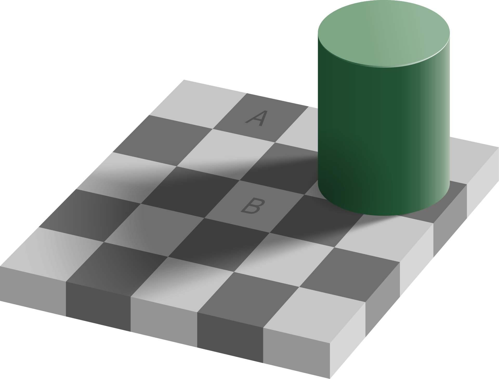
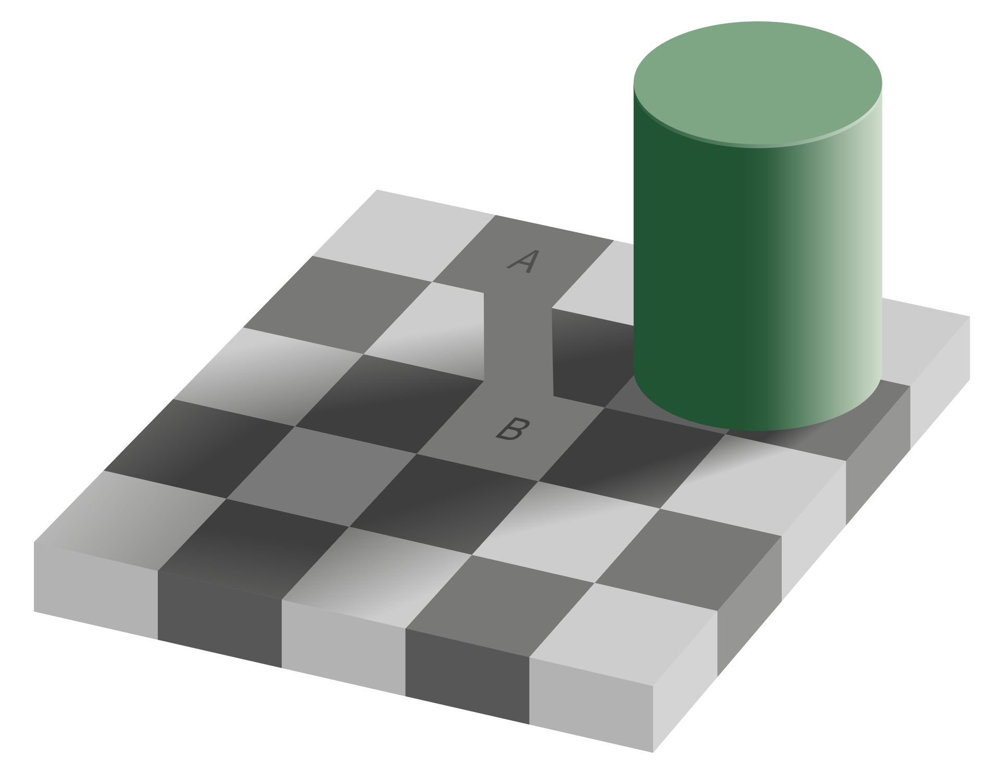

In visual perception, an optical illusion, also called an visual illusion, is an illusion caused by the
visual system and characterized by a visual percept that arguably
appears to differ from reality. An example of this is the images below,
in which the gray squares labbeled "A" and "B" appear to be
shaded differently, when they are actually the same color.


Other Illusions
Illusions come in many forms including: visual, auditory, tactile, and
temporal. For example, a temporal illusion could be an inaccurate estimations
of time which could be due to external variables such as jet lag or a lack of stimulation. Below is an image explaining how temporal illusions work.